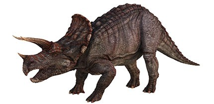

|  |
|
With its 3 horns, a parrot-like beak and a large frill that could reach nearly 1 metre (3 feet) across, the Triceratops skull is one of the largest and most striking of any land animal. The horns could have been used to fend off attacks from Tyrannosaurus.A partial Triceratops fossil collected in 1997 has a horn that was bitten off, with bite marks that match Tyrannosaurus. The fossil shows that the horn healed after being bitten, so at least some Triceratops survived these encounters. Puncture marks on fossil frills show that male Triceratops also used their horns to fight each other, probably to impress females.
Many other horned dinosaurs are known to have lived in herds because of a fossil find of many different individuals at the same location. By moving in herds, prey animals can warn each other of danger and lessen their chances of being singled out by a predator. However, Triceratops was unusual in this respect, as their remains are usually found individually, suggesting they may have spent much of their lives alone.
The Triceratops frill might have helped to protect its neck, but some specimens show Tyrannosaurus bite marks puncturing the frill, so it wasn't always enough. The frills could also have been used to attract mates, as a way for members of the same species to recognise each other.